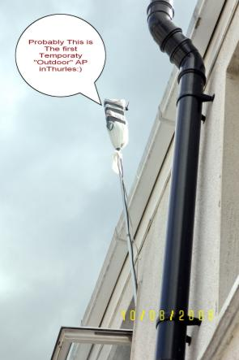

...making Linux just a little more fun!
Contents:
Launderette extra:
[Ben] Hilarious as usual, Morford rants about Wind0ws.
http://sfgate.com/cgi-bin/article.cgi?f=/gate/archive/2006/07/14/notes071406.DTL&nl=fix
So you do what you always do when it's just you and Windows, alone: You lie. To yourself. "Maybe, just maybe this time it really will be different," you say, blocking out the one thousand previous proofs to the contrary. "What the hell. It's not like I have much choice." You close your eyes. You give in.
You are, once again, Microsoft's bitch.
He's a Mac zealot, but... damn, he's funny.
[Rick]
You might be surprised to hear that _my_ system responds on port
23/tcp.
....
....
You can pull yourself up off the floor, now.
It's this, of course:
:r! grep 23 /etc/ssh/sshd_config Port 23
[Ben] Didn't knock me over at all, Rick; I have more confidence in your sysadminly fu than that. :) I thought you might have a pitcher of cold water rigged over that door - or perhaps 'blinkperl'.
http://freshmeat.net/projects/blinkperl/
[Rick] Oh, I love that!
I was actually thinking maybe an http server broadcasting this very scary image of me wearing the Hawaiian Shirt from Hell at the 2001 Linux 10th Anniversary Picnic: http://linuxmafia.com/~rick/pictures/img.jpeg
Now that's a deterrent.
[Brian] Yikes! I remember that shirt! I thought you'd lost a bet. And of course, that's the lasting image, because it was the last time I was in town for one of those (before we moved East).
Also, that image strays rather far from the "root kit" subject line. After all, you weren't particularly difficult to detect in that garb. Quarantining ... ah, that's another matter entirely.
[Rick] Inevitably, there's a story.
Deirdre and I were in Honolulu for the first and only Westercon (US western region science-fiction convention) ever to be held in Hawaii, and we heard that there was to be a tacky-shirt competition.
We made a beeline for Hilo Hattie's factory-outlet store (http://www.hilohattie.com/), makers of fine aloha shirts and other island gear. Nothing quite seemed right, until, just before we reached the exit, in the remainder room, in the furthest corner... The Shirt! It hung there, quietly pulsating.
It didn't take the grand prize: There was serious competition. However, it was one of the winners.
[Sluggo] http://www.npr.org/templates/story/story.php?storyId=5500103
[RealAudio] First of two NPR commentaries on "net neutrality", the issue of whether telcos should be able to charge their own partners less for Internet bandwidth than competing content providers. This one is the telcom's industry side and argues that activists want a new law to "artificially" subsidize rates for certain providers (naming Microsoft and [Yahoo or Google]). The commentary argues that the current "hands off" approach to Internet regulation is better. The next piece will be an opposing viewpoint from Craig of Craigslist.
[Ben] Micr0s0ft has annoyed millions of people with their system messages, but now they went just that little bit too far - they annoyed a poet. I guess they'd never heard of "Meddle thou not in the affairs of poets, for thou art vulnerable and your name rhymes with nasty things"...
----- Forwarded message from Abraham Thomas <thomas@> -----
Guest poem submitted by William Grey, <wgrey@>:
"Windows is Shutting Down"
Windows is shutting down, and grammar are
On their last leg. So what am we to do?
A letter of complaint go just so far,
Proving the only one in step are you.
Better, perhaps, to simply let it goes.
A sentence have to be screwed pretty bad
Before they gets to where you doesnt knows
The meaning what it must of meant to had.
The meteor have hit. Extinction spread,
But evolution do not stop for that.
A mutant languages rise from the dead
And all them rules is suddenly old hat.
Too bad for we, us what has had so long
The best seat from the only game in town.
But there it am, and whom can say its wrong?
Those are the break. Windows is shutting down.
-- Clive James
----- End forwarded message -----
[Sluggo] In a Linux Weekly News article about filesystem design:
"The second day of the workshop began with the discovery that the bulb in the projector had burned out, which was fine with us as it further discouraged the use of mind-numbing slideware. We attributed part of the amazing productivity of the workshop to the lack of a projector and the fact that most of us also lacked any form of network connectivity from the conference room, forcing us to pay attention to what was going on instead of reading our email."
http://lwn.net/Articles/190224/
[Ben] I'm happy to say that in all my years of teaching, I've managed to avoid using the projector 99% of the time. I also carefully maintain my hard-to-read style of board-scribbling, thus forcing the students to concentrate on what I'm saying. :))) I can't do anything about the Net access from the classrooms - for that matter, I wouldn't change it if I could - but, as I see it, gadgets usually detract more than they add to a teaching environment.
In the welding class that Kat and I recently completed, she kept complaining that she had problems understanding the instructor's Missourah accent - and yet, she graduated with an 'A' and some excellent welding skills. Seems like a (highly effective) ploy to me. :)
[Jimmy] My friend Mariusz needed an external access point recently, but only had an internal AP -- so he tied it to a pole, covered it with a plastic bag and hung it out the window... and it worked.
He used a shoelace to lash the AP to the pole... I, of course, made the appropriate comments about shoestring budgets, etc.
(Photo courtesy of Mariusz Florczak)

{kind=link}